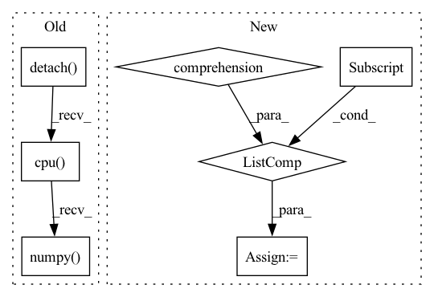

Pattern ID :1943
Before Change
predictions = convert_logits_to_ids(logits, tokenized_output["mask_positions"])
label_tokens = []
for prediction in predictions.detach().cpu().numpy() .tolist():
PAD_TOKEN_ID = tokenizer.convert_tokens_to_ids(["[PAD]"])[0]
while PAD_TOKEN_ID in prediction: // 移除label中的 [PAD] token
prediction.remove(PAD_TOKEN_ID)After Change
predictions = convert_logits_to_ids(logits, tokenized_output["mask_positions"]).cpu().numpy().tolist() // (batch, label_num)
predictions = verbalizer.batch_find_main_label(predictions) // 找到子label属于的主label
predictions = [ele["label"] for ele in predictions]
used = time.time() - start_time
print(f"Used {used}s.")
return predictions
In pattern: SUPERPATTERN
Frequency: 3
Non-data size: 7
Instances Fragment ID: 8636791
Project Name: harderthenharder/transformers_tasks
Commit Name: bf825bb22c43795f1e3a08cf8969ddc613051e76
Time: 2022-11-30
Author: pankeyu@pankeyus-MacBook-Pro.local
File Name: prompt_tasks/p-tuning/inference.py
M Class Name: AnonimousClass
N Class Name: AnonimousClass
M Method Name: inference(1)
N Method Name: inference(1)
M Parent Class:
N Parent Class:
M File Name: prompt_tasks/p-tuning/inference.py
N File Name: prompt_tasks/p-tuning/inference.py
M Start Line: 50
M End Line: 69
N Start Line: 59
N End Line: 80
Before Change
mask_labels = batch["mask_labels"].to(args.device) // (batch, label_num)
predictions = convert_logits_to_ids(logits, batch["mask_positions"].to(args.device)) // (batch, label_num)
mask_labels = mask_labels.detach().cpu().numpy().tolist()
predictions = predictions.detach().cpu().numpy() .tolist()
metric.add_batch(pred_batch=predictions, gold_batch=mask_labels)
eval_metric = metric.compute()
model.train()After Change
mask_labels = ["".join(tokenizer.convert_ids_to_tokens(t)) for t in mask_labels] // id转文字
predictions = convert_logits_to_ids(logits, batch["mask_positions"]).cpu().numpy().tolist() // (batch, label_num)
predictions = verbalizer.batch_find_main_label(predictions) // 找到子label属于的主label
predictions = [ele["label"] for ele in predictions]
metric.add_batch(pred_batch=predictions, gold_batch=mask_labels)
eval_metric = metric.compute()
model.train()
return eval_metric["accuracy"], eval_metric["precision"], \ Fragment ID: 8636795
Project Name: harderthenharder/transformers_tasks
Commit Name: bf825bb22c43795f1e3a08cf8969ddc613051e76
Time: 2022-11-30
Author: pankeyu@pankeyus-MacBook-Pro.local
File Name: prompt_tasks/p-tuning/p_tuning.py
M Class Name: AnonimousClass
N Class Name: AnonimousClass
M Method Name: evaluate_model(6)
N Method Name: evaluate_model(4)
M Parent Class:
N Parent Class:
M File Name: prompt_tasks/p-tuning/p_tuning.py
N File Name: prompt_tasks/p-tuning/p_tuning.py
M Start Line: 85
M End Line: 91
N Start Line: 74
N End Line: 98
Before Change
fig, axes = plt.subplots(len(traces_to_show) + 1, 1, figsize=(15, 8))
else:
assert len(axes) == len(traces_to_show) + 1, f"axes must have length {len(traces_to_show) + 1}"
axes[0].plot(errors.detach().cpu().numpy() )
axes[0].set_xlabel("Time [-]")
axes[0].set_ylabel("Squared Error [-]")
axes[0].set_title(title)After Change
if trace not in traces_to_indexes:
raise ValueError(f"Unknown trace to show: {trace}. Known traces: {list(traces_to_indexes.keys())}")
given_names = kwargs.get("traces_to_show_names", [traces_to_names[t] for t in traces_to_show] )
assert len(given_names) == len(traces_to_show), "traces_to_show_names must have the same length as traces_to_show"
for trace, trace_name in zip(traces_to_show, given_names):
traces_to_names[trace] = trace_name Fragment ID: 8636797
Project Name: neurotorch/neurotorch
Commit Name: 53f1424222bf470ccfed91290df8c9e1ac3e616b
Time: 2022-11-11
Author: 50332514+JeremieGince@users.noreply.github.com
File Name: src/neurotorch/visualisation/time_series_visualisation.py
M Class Name: Visualise
N Class Name: Visualise
M Method Name: plot_timeseries_comparison(10)
N Method Name: plot_timeseries_comparison(10)
M Parent Class:
N Parent Class:
M File Name: src/neurotorch/visualisation/time_series_visualisation.py
N File Name: src/neurotorch/visualisation/time_series_visualisation.py
M Start Line: 411
M End Line: 467
N Start Line: 412
N End Line: 481